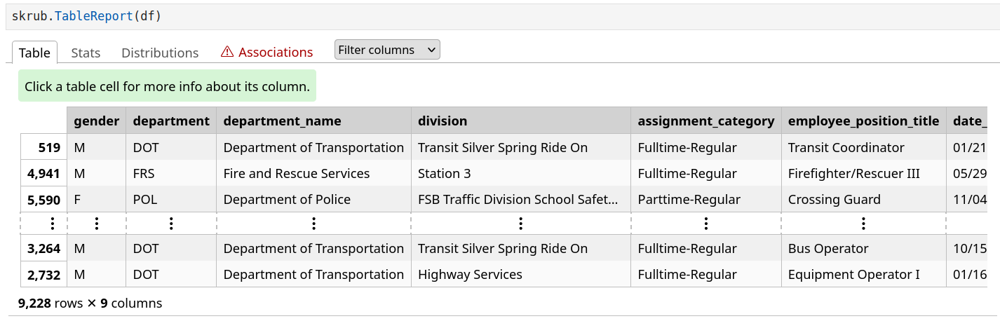
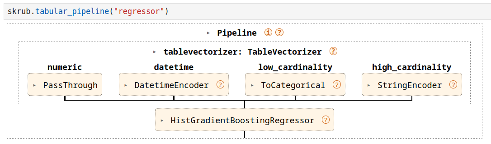
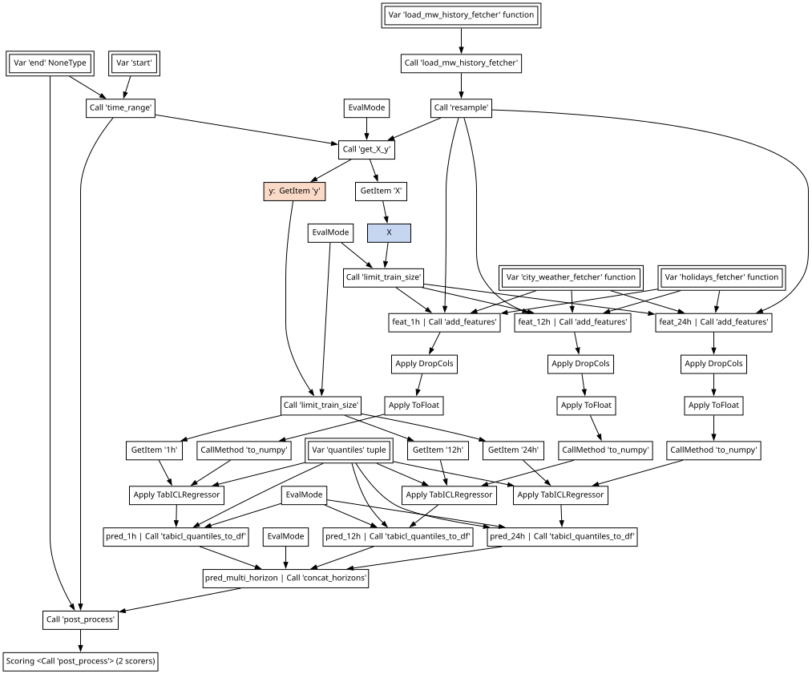
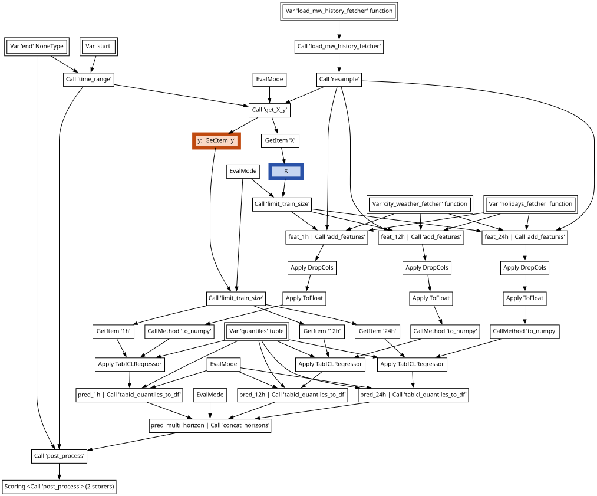
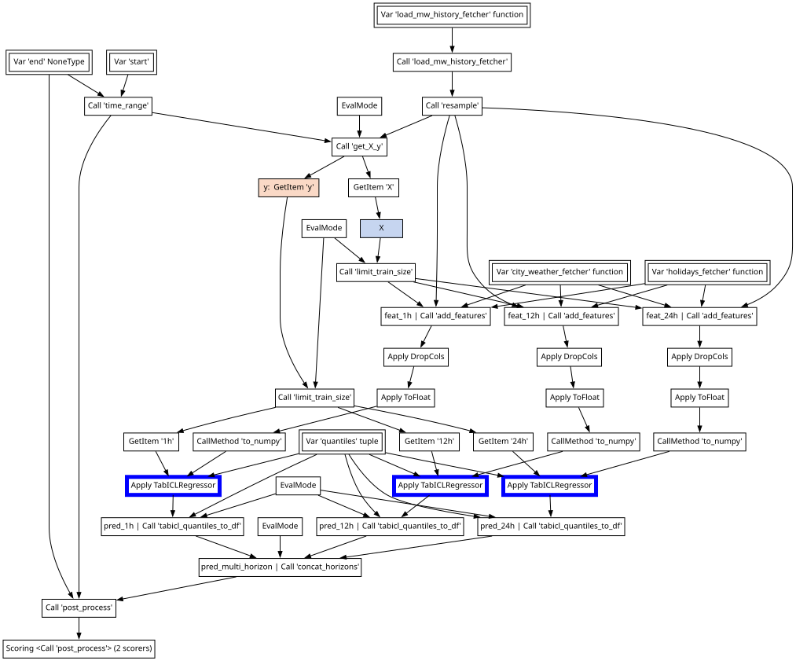
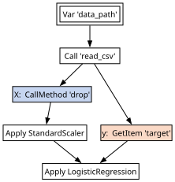
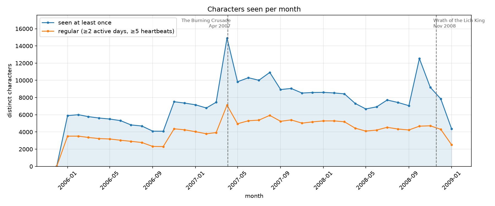
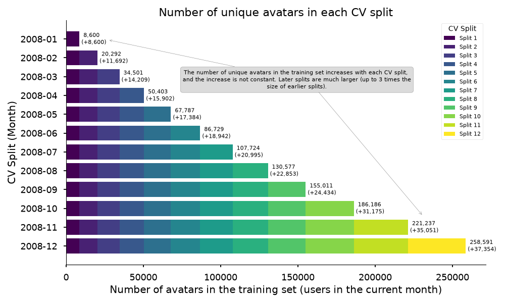

Skrub Data Ops: an application to player churn
Riccardo Cappuzzo
Inria P16, :probabl.

Skrub
Machine learning on tabular data


- skrub-data.org
- This talk: the skrub DataOps framework.
Act 1: skrub Data Ops
Textbook ML
\(X \in \mathbb{R}^{n \times p},\ y \in \mathbb{R}^n\)
\(\hat{y} = f_{\hat{\theta}}(X)\)
estimator = TabICLRegressor()
cross_validate(estimator, X, y)
estimator.fit(X_train, y_train)
estimator.predict(X_new)Data-Science Practice

Textbook ML
\(X \in \mathbb{R}^{n \times p},\ y \in \mathbb{R}^n\)
\(\hat{y} = f_{\hat{\theta}}(X)\)
estimator = TabICLRegressor()
cross_validate(estimator, X, y)
estimator.fit(X_train, y_train)
estimator.predict(X_new)Data-Science Practice

Textbook ML
\(X \in \mathbb{R}^{n \times p},\ y \in \mathbb{R}^n\)
\(\hat{y} = f_{\hat{\theta}}(X)\)
estimator = TabICLRegressor()
cross_validate(estimator, X, y)
estimator.fit(X_train, y_train)
estimator.predict(X_new)Data-Science Practice

To build a ML pipeline, we need to:
- preprocess the data, perform feature engineering, train a model …
- so we need to learn a state…
- while we evaluate the predictive performance…
- as we avoid data leakage…
- with multi-source input …
How do we deal with that?
With Data Ops…
Data wrangling: filtering, resampling, aggregations, joins, …
- Cross-validate without data leaks.
- Tune choices with validation scores.
- Replay on new inputs.
DataOps
- All the goodies of the scikit-learn framework:
fit()&predict(), cross-validation, hyperparameter tuning, serialization. - Without the usual restrictions & while supporting arbitrary data processing: multiple inputs, filtering samples, dynamic arguments …
- And more: Optuna integration, pipeline inspection, …
Basic example
Declare the pipeline

What have we seen so far?
- Data science is harder than what you learn in classes
- A full ML pipeline involves preprocessing, feature engineering and model training
- We want to learn a “state” (it’s called machine learning after all), evaluate performance and do so while avoiding data leakage
- Data Ops are a framework that allows to build stateful pipelines for arbitrary code and inputs
Act 2: Dataset and problem
What are we here for?
- The dataset: World of Warcraft Avatar history Dataset 1
- ~35.6M timestamped player is active” lines (heartbeats).
- The problem: Predict whether a player will stop playing (will churn) on a given month, to implement some policy to retain them.
The problem
- We are working with a subscription-based strategy where players pay a monthly fee to play the game.
- Some players eventually stop playing, and thus stop paying their subscription.
We want to predict which players are likely to churn in the next month, in order to enact some measure to keep them from leaving.
A player churns if they have no activity for two full months.
- Our “unit of analysis” is a (player character, month) pair.
- Each pair tells us whether the given player character played on the given month.
The game
- World of Warcraft (WoW) is a subscription-based MMORPG released in 2004 by Blizzard Entertainment.
- Players create character avatars to navigate the open game world and perform various activities.
- Players level up their caracters to make them more powerful.
- A single player may have multiple avatars.
World of Warcraft Avatar history
- ~35.6M timestamped “character is active” lines (heartbeats).
- Heartbeats are stored in txt files, grouped by day and quarter.
- Time range: 2005-12-31 / 2009-01-10 in the Taiwanese server.
- Two expansions are included in the range:
- The Burning Crusade (April 2007)
- Wrath of the Lich King (November 2008).
# cut output of tree WoWAH
WoWAH
├── 2006_01_03
│ ├── 2006-01-01
│ │ ├── 00-03-56.txt
│ │ ├── 00-13-43.txt
│ │ ├── 00-23-48.txt
│ │ ├── 00-33-48.txt
│ │ ├── ...
│ ├── 2006-01-02
│ ├── ...
├── 2006_04_06
├── ...The dataset
- Training samples are plain text, with custom formatting.
- A custom parser must be used to convert the samples and extract the correct dtypes.
# head WoWAH/2006_01_03/2006-01-01/00-03-56.txt
Persistent_Storage = {
[1] = "0, 12/31/05 23:59:46, 1,0, , 5, Orc, Warrior, Durotar, no, 0",
[2] = "0, 12/31/05 23:59:46, 1,1, , 9, Orc, Shaman, Durotar, yes, 0",
[3] = "0, 12/31/05 23:59:52, 2,2, , 13, Orc, Shaman, Durotar, no, 0",
[4] = "0, 12/31/05 23:59:52, 2,3,0, 14, Orc, Warrior, Durotar, no, 0",
[5] = "0, 12/31/05 23:59:52, 2,4, , 14, Orc, Shaman, Durotar, yes, 0",
[6] = "0, 12/31/05 23:59:52, 2,5, , 16, Orc, Hunter, The Barrens, yes, 0",
[7] = "0, 12/31/05 23:59:52, 2,6, , 18, Orc, Warlock, The Barrens, no, 0",
[8] = "0, 12/31/05 23:59:52, 2,7, , 17, Orc, Hunter, Silverpine Forest, yes, 0",
The datasets: some statistics

Feature engineering
- Session-based features (
skrub.SessionEncoder)- Number of sessions, duration, distribution during the day…
- Monthly aggregates
- Statistics by class, race, overall playerbase…
- Location-based features
- Zone rarity, where players spend their time
- Lagged features
skrub.TableVectorizerto encode
More detail about feature engineering and model selection is available in the full technical report.
Model selection
HistGradientBoostingClassifieras the evaluation model- Month-by-month temporal CV
- Hyperparameter tuning with Data Ops and Optuna
Important
Model optimization is intentionally not the focus of this talk.
Caveats
- While we are interested in players, we have information only about their avatars. A player may stop playing with an avatar, but keep paying the subscription.
- As this is past data, we cannot actually evaluate the effectiveness of whatever measure we decide to implement, so we can only try to predict player behavior.
Act 3: The implementation
- We won’t be going over the detailed implementation.
- The material is available in the repository.
The implementation involved a number of pain points that Data Ops simplified.
Pain point 1 - Data ingestion is part of the pipeline
- Data is not in a clean format:
- Heartbeats are in text files scattered over hundreds of folders
- Logs need to be resampled to have (character, month) granularity
- The same transformations (and all other learned states) need to be replayed on new data.
- Boilerplate code and pre-processing scripts are brittle and prone to errors.
Pain point 1 - Data preparation is part of the pipeline
In our Data Op plan:
- The input dataset is a list of plaintext files
- The pipeline reads each file, removes bloat lines, parses each heartbeat
- Heartbeats are converted to a polars lazyframe to serve as
historicalfor the rest of the pipeline - Builds the churn dataset by aggregating the available data over player character and month
The target is built inside of the pipeline.
Pain point 1 - Data preparation is part of the pipeline
- Data Ops bring data ingestion and processing into the pipeline.
- Preprocessing can vary depending on the specific use case.
import skrub
def draft_loader():
return pd.read_csv("path/to/file.csv")
def prod_loader():
return api.fetch().to_pandas()
loader = skrub.var("loader", draft_loader, becomes_default=True)
# build the DAG
learner = data_op.skb.make_learner(fitted=True)
# Use a different loader to get production data
learner.predict({"loader": prod_loader})
# No changes needed by the learner!Pain point 2 — Leakage in temporal feature engineering
- Features must only use data available at scoring time
- Session detection and aggregation must be executed only on data we have access to
- we are performing aggregations over different, time-aware splits
Pain point 2 — Cross-validation with irregular time splits

Pain point 2 — Cross-validation with irregular time splits
- Off-the-shelf
TimeSeriesSplitassumes folds of equal size - Here the number of (character, month) rows grows every month — folds are unbalanced by nature
Pain point 2 — Cross-validation with irregular time splits
- Data Ops natively support custom splitters for splitting data in the DAG.
- Custom splitters can use custom dataframe logic to select the samples
- Splitters plugged in
skb.mark_as_X(cv=Splitter())are honored bycross_validate,train_test_split, randomized search, and scoring
class Splitter:
def split(self, X, y=None):
...
for split_point in ...:
test_month = pl.Series([split_point]).dt.offset_by("1mo").first()
train_idx = (
X.with_row_index("idx")
.filter(pl.col("month") <= split_point)["idx"]
)
test_idx = (
X.with_row_index("idx")
.filter(pl.col("month") == test_month)["idx"]
)Pain point 3 — Tuning wrangling choices, not just model knobs
- Model choices are not limited to model hyperparameters:
session_gap(15/30/60 min), include location features?, add Gini?, which lags? - These are data pipeline decisions, with big performance and runtime impact
- Pipeline decisions modify the pipeline itself, and regular hyperparameter tuning does not work
Pain point 3 — Tuning wrangling choices, not just model knobs
- With DataOps choices can be dropped inline, where the value is used —
choose_from,choose_bool,choose_float(log=True) - One call to
skb.make_randomized_search(backend="optuna", ...)turns the whole DAG into a search
- Replace any value with a choice:
X = data.drop(columns="target", errors="ignore").skb.mark_as_X()
y = data["target"].skb.mark_as_y()
pred = X.skb.apply(StandardScaler()).skb.apply(
- LogisticRegression(C=1.0),
+ LogisticRegression(C=skrub.choose_float(0.1, 10.0, log=True)),
y=y)X_enc = X.skb.apply_func(build_features,
+ additional_features=skrub.choose_bool()
)
pred = X.skb.apply(LogisticRegression())Pain point 4 - Debugging and inspecting a pipeline
- Inspecting a regular pipeline is complex and requires programmatic access
- Once deployed, it is hard to maintain a trained model (“why was this step needed?”, “where is the source code?”)
- The result of intermediate steps is hard to access
Pain point 4 - Debugging and inspecting a pipeline
- Data Ops reports provide rich information about each node
- The source code used to generate a Data Op is bundled with it
- When a preview or environment is provided, intermediate results can be shown